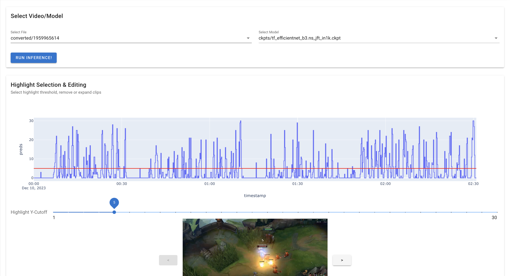
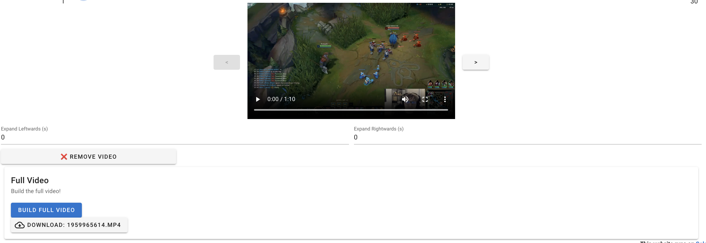
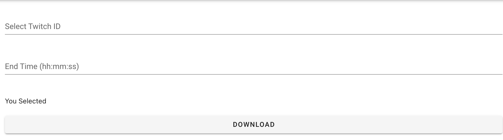
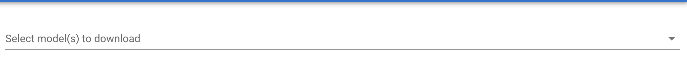
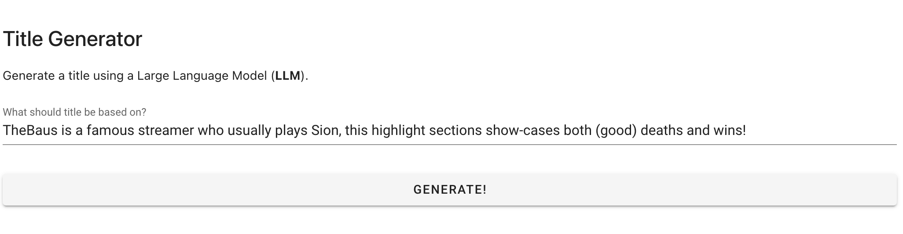
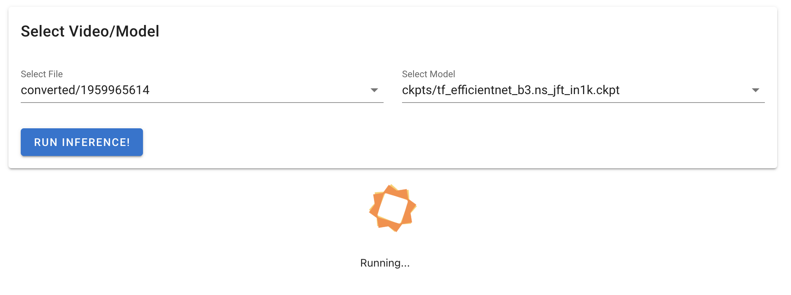

Solara, League of Legends and Deep Learning to extract E-Sport Highlights
Hi all! 👋
I’m back with a New Years Resolution to release at least 6 blogs in 2024, focusing on interesting content that’s unique and not simple click-bait.
Today I’m sharing the continuation of a presentation I did at Foo Café. I have built a complex yet user-friendly Data App using solara.
There’s two parts that creates this complexity.
- Heavy processing that requires threading
- Deep Learning & ffmpeg processing
- Multi-stage app that requires state
- This will be clear when you view the video of the app
My presentation at Foo Café focused more on the training process and exploring option to deploy my tool. This blog rather focuses on the Data App itself! 🚀
Code is available on GitHub1.
Code available on github.com/londogard/lol_highlight_detection.
Quick Backstory
My kid brother asked me to help him earn some quick bucks through automating a process to build highlight-videos of E-Sports to upload on YouTube. The emphasis was on a single streamer, TheBausFFS2.
2 TheBausFFS is a famous Swedish streamer in League of Legends (LoL). He’s focusing on being fun and speaking as much “swenglish” (svengelska) as possible.
When I set out my brother had a hope to earn cash, myself I was happy to learn more about new tools and being able assist my family with my expertise in Deep Learning. 💪
Choices during my Journey
I was contemplating four (4) options to deploy my resulting model.
ToolStreamlit |
Pro
|
Con
|
| Solara |
|
|
| Jupyter Notebook |
|
|
| Gradio |
|
|
Other tools such as Panel was briefly considered and rejected due to time and non-composability. For technical details such as model and more see my previous blog.
Result
The whole process gave me two results.
1. Knowledge
Most important to me I learned a lot, especially by playing around with Solara in both complex and siple use-cases.
- Intimate knowledge about Solara and complex Data Apps that require high performance and efficiency.
- Insights in Video Classification and how it differentiates from Image Classification.
- Experimentation in how to build Data Apps to non-domain-experts that have no technical expertise nor willingness to learn new things.
2. A Data App
I built an exciting Data App that’s simple to use, applies automatic Video Processing and Deep Learning Inference for non-tech users.
Following from here I’ll share some building blocks to create an exciting Data App. To learn more about Solara basics I refer to my previous blog where I compare with Streamlit and introduce how to build a simple app. I’ll share code snippets and videos of the app.
The resulting code covers most of the building blocks required to build everything from basic to complex Data Apps!
App show case
See previous blog to learn more about model training.
Videos
Screenshots





Building Blocks / Code-Snippets
I share some of the more interesting parts of Solara and how it can simplify your Data App.
Building Progress Loaders in Solara
I created a component to wrap Progress on top of the use_thread returned solara.Result class. This is very useful when you’re writing code and want a “prettier” spinner with some text.
The possibility to create re-usable components which are stateful like this is exciting!
@solara.component()
def ProgressDynamic(
msg: str,
result: solara.Result[Any],
):
if result.state == solara.ResultState.RUNNING:
Progress(msg)This is a quite simple class, yet it cleans up a lot of code when called like:
res = write_video.use_thread(
tstamp["start"],
tstamp["end"],
selected_vid,
Path(file_name).stem,
)
Progress("Building Clip...", res)
Checkpointing / State Management and Parent/Children (Hierarchy)
State in Solara is managed through solara.reactive’s. These enable a clean representation of UI & backend state. Adding hierarchy it becomes even better, it’s just as React! State trickles both up and down through the tree.
Trickle Down to Child
One way to use state hierarchy is to provide from parent to child a solara.reactive which enables downstream users to atomically update as parent, or anyone, updates said state variable.
@solara.component
def CutOffChartSelection(
cut_off: solara.Reactive[int],
df: pl.DataFrame,
): # this method is simplified to show-case important parts.
div = solara.Column()
solara.SliderInt(
"Highlight Y-Cutoff",
cut_off,
min=df["preds"].min() + 1,
max=df["preds"].max(),
thumb_label="always",
tick_labels="end_points",
)
with div:
fig = px.line(df, x="timestamp", y="preds", line_shape="hv")
fig.add_hline(y=cut_off.value, line_color="red")
solara.FigurePlotly(fig)What’s important here?
- Note how I set
div = solara.Column()this lets me re-order UI and disregard execution flow. - Note
cut_offissolara.Reactive, whenever this is updated in parent the child will be updated additionally. And the reverse is also true.
Trickle Up to Parent
State does not only trickle up, as the solara.reactive is the same as every other use we can change state in a child and trickle up to parent and other consumers!
It’s a very simple and clean approach to state, kudos React and Solara!
@solara.component
def ModelFileSelectComponent(
file: solara.Reactive[str],
model: solara.Reactive[str],
):
files = ...
models = ...
with solara.Card("Select Video/Model"):
with solara.Columns():
solara.Select("Select File", values=files, value=file)
solara.Select("Select Model", values=models, value=model)In this component we can see that we insert file: solara.Reactive which is edited through the solara.Select. This creates a clean trickle-up flow and allow us to hide details.
⚠️ It would be even cleaner if our component could return this reactive variable, rather than declaring it in parent.
Threading to improve UI experience
When working with UI it’s important to not block the main thread, sometimes called the rendering thread.
If we block the main thread the app becomes frozen and doesn’t respond. This becomes a bad user experience.
It’s solved by using threads which fortunately Solara makes a breeze. There’s two ways to apply threading.
# 1. Memoized function
@solara.memoize
def slow_func(...): ...
result = slove_func.use_thread(...)
# 2. Run thread directly
def slow_func_2(...): ...
result = solara.use_thread(lambda: slow_func_2(...), dependencies=...)Both approaches results in solara.Result value that updates itself as it progress.
solara.Result[T]has two important values.
statewhich is one of the following:[..., RUNNING, FINISHED].Once finished
valuewill be filled of the resultT.
The result is a smooth experience through threads. The developer side is not as perfect and feels underdeveloped, I end up writing something that feels almost like an anti-pattern with a bunch of if-elses to figure if result is done.
I can see a future where you call a .use_thread with something like apply_progress=True and also inject your own solara.Reactive to allow a more reactive approach to the result. The current result is clear code though, that’s explainable even on GitHub - as shared below.
res = write_video.use_thread(...)
if res.state == solara.ResultState.RUNNING:
Progress("Writing video...")
elif res.state == solara.ResultState.FINISHED:
show_finished_ui(...)Again, this is no problem once-in-a-while, but if you’re using threads heavily it becomes a if-else craze.
All in all it’s a good experience to include threading though, something unimaginable in Streamlit!
Plotly Callbacks
I implemented a really cool Plotly Callback through Solara’s integration. It allows the user to select a subset of the video by “zooming”/”dragging”. It’s a clean approach to selecting sub-parts of videos to build the full video, i.e. one game at a time and not the full stream! See Figure 1.
def update_vals(relayout_dict: dict[str, Any] | None):
if relayout_dict is not None:
layout = relayout_dict["relayout_data"]
start_stop.value = [
parser.parse(layout["xaxis.range[0]"], ignoretz=True),
parser.parse(layout["xaxis.range[1]"], ignoretz=True),
]
solara.FigurePlotly(fig, on_relayout=update_vals)How To Run App
I have added two ways to run the app. Either through Docker/podman containers or through Python invocation.
For Python I opted for a conda env using micromamba which is really awesome and simple to get a environment that’s reproducible.
Solara findings
solara.reactive is awesome
This simple tool enables things that are essentially impossible or creates unmaintainable code in Streamlit. To do similar things you’d need to hack the state.
Having a multi-stage app like this app where you checkpoint each step into the state would be such a impossibility.
Solaras UI/logic separation is better but not perfect
This might be on myself as I started using Streamlit before Solara. But Solara states that they separate UI and logic better than competitors through reactive state. My experience is that it’s almost as easy to create the same interdependent mess as in Streamlit.
Perhaps Reacts “clean” separation is more because of having a clear boundary between backend/frontend rather than React itself.
Solara Issues
I found myself having big problems with “resetting” state of variables that depend on the Operating System. In Streamlit you can use st.reload() to reload the whole UI, Solara does not have something similar.
My problem was that I have model/video download as part of the UI, and solara.reactive variables that has these variables. It’s not really possible to update these when changing tabs.
For now there was a decent work-around, rather than using Tabs I use Select to change page. By changing page this way the solara.reactive variables are reloaded.
Outro
This is it for today! I hope you enjoyed and potentially became intrigued to test Solara.
I hope to be back within 2 months, to make sure I keep my New Years Resolution 😉.
~Hampus Londögård